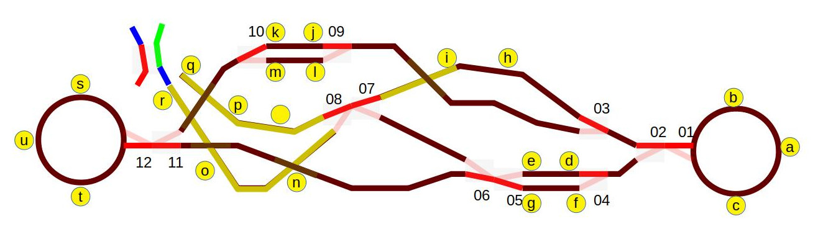

So, anyway, another poster at forum.arduino.cc is looking to do something rather complex – a model railroad system. This is his proposed track layout:

Yeah. But his actual post is that – to start with – he'd like to have a length of track with end stops, batting the trains back and forth. Thing is, he'd like more than one of them.
So lets dive straight into it.s
So, I'll have track objects. A track object knows which way the train is currently going on it. It owns a couple of end-stop objects. The track asks these things, “say, is the train on you?” and if it is, it changes the direction of the train, which involves a sequence of things involving time. There's other ways to do this, of course – event driven models with events. But this will do for now. Likewise, it might be worthwhile making another layer of abstract class to separate out the underlying logic from the sequence of stuff a track has to do to change the direction fo the train … you know what? I'll slice this a bit differently. It's going to be fine.
The OP is using LDRs for the end stops, but there's a bunch of things he could be using. Likewise, there are plenty of ways to shunt a train around. So I'll be using abstract classes. As with part 1, I'll give all of my things a time slice. Now, this is not really necessary for the LDRs, but what if at some stage in the future we want to use a different type of sensor altogether? What if the sensor is some sort of remote thing that needs to be polled, and has latency? Nope – I'll do things the way I always do them: everything gets a setup() and a loop().
So, the first thing to do is to define my 'this thing gets a time-slice' class, and the frameowrk that runs everything.
class Runnable {
public:
virtual void setup() {
}
virtual void loop() {
}
};
Runnable *all_runnable_objects[] = {};
void setup() {
for (int i = 0; i < sizeof(all_runnable_objects) / sizeof(*all_runnable_objects); i++) {
all_runnable_objects[i]->setup();
}
}
void loop() {
for (int i = 0; i < sizeof(all_runnable_objects) / sizeof(*all_runnable_objects); i++) {
all_runnable_objects[i]->loop();
}
}Now, that's a fair bit of very weird code. But all it does is: for each thing in our array that's a runnable, call setup() and loop(). As we define and create runnable objects, we will add them to the array. The setup() and loop() methods are defined to be virtual. This means that subclasses are allowed to override those methods with their own implementation. The default implementations do nothing.
Ok! the end stop class is quite simple:
class EndStop {
public:
virtual boolean trainSensed();
};All this does is say “anything that is an end stop can say yes or no that there's a train on it”. But our OP has a specific kind of end stop – one that uses an L:DR hooked to an analog pin:
class LDREndStop : public EndStop {
const byte ldrPin = A0;
public:
boolean trainSensed() {
return analogRead(ldrPin) >= 400;
}
};
LDREndStop endStopA, endStopB, endStopC, endStopD;Now, you can hopefully see the problem here – all the end stops are going to be using the same pin. We need for each end stop to “know” what pin it uses, and so I'll use a constructor.
class LDREndStop : public EndStop {
const byte ldrPin;
public:
LDREndStop(byte pin) : ldrPin(pin) {
}
boolean trainSensed() {
return analogRead(ldrPin) >= 400;
}
};
LDREndStop endStopA(A0), endStopB(A1), endStopC(A2), endStopD(A3);Great! Now all of our LDR end stops know what pin they are supposed to look at, and can report back that a train has been sensed to anything that wants to know. We don't need anything else for these – they don't need time slices, so there's nothing more to do.
And now things become complicated. A track knows which way its train is currently going, and has two end stops. But the detais of how to change the directopn of a train – I want to put that in a subclass whose job it is to sequence relays. So, at any iven time a track will be moving towards A, changing to B, moving towards B, or changing to A. it will cooperate with its subclasses by way of methods that are left undefined for the subclass to implement.
class Track : public Runnable {
EndStop& endA;
EndStop& endB;
TrackState state;
protected:
void doneChanging() {
switch (state) {
case CHANGING_TO_B:
state = MOVING_TO_B;
break;
case CHANGING_TO_A:
state = MOVING_TO_A;
break;
}
}
virtual void changeToB();
virtual void changeToA();
public:
void loop() {
switch (state) {
case MOVING_TO_A:
if (endA.trainSensed()) {
changeToB();
state = CHANGING_TO_B;
break;
case MOVING_TO_B:
if (endB.trainSensed()) {
changeToA();
state = CHANGING_TO_A;
break;
}
}
}
}
};When the track senses that it needs to change direction, it tells its subclass to do whatever needs to be done to make that happen. The subclass replies with a call to doneChanging() when its job is complete.